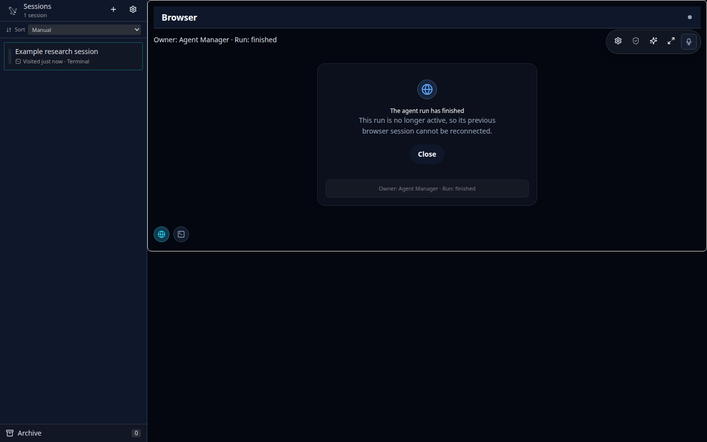
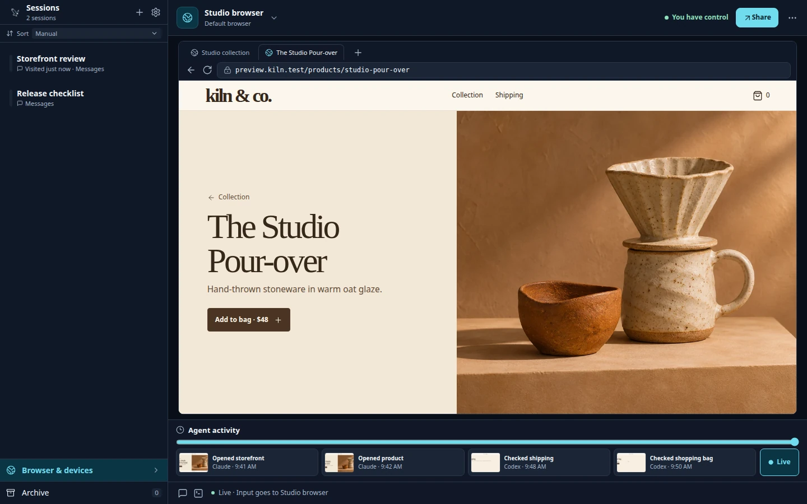
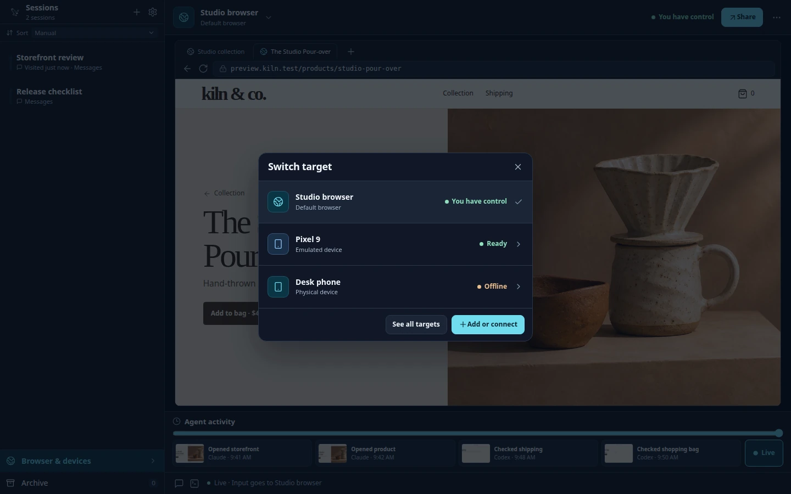
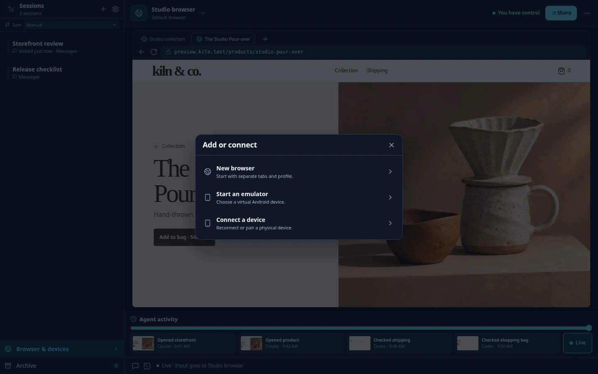

Browser & devices inside Aquila
Open a shared browser, emulator, or physical device from the Aquila workspace. See who’s driving and review their screenshots without taking over.

Where it opens
Choose Browser & devices above Archive in the Sessions sidebar. On a phone, open the menu at top left to find it. The Messages globe opens this conversation’s target in the same viewer.
See the phone Sessions drawerToday
CapturedAfter the agent run ends, the browser pane offers Close.

Shared browser
Rendered prototypeThe global entry opens the last target, with a default browser on first use. Messages and Terminal are one tap away.

Switch or add a device
Choose the target name and chevron at the top of the viewer, such as Studio browser. The picker lists browsers, emulators, and physical devices together.
Switch target
Rendered prototypeSee which targets are ready, offline, or in use. Select one to open its screen and history.

Add or connect
Rendered prototypeChoose New browser, Start an emulator, or Connect a device from the same picker.

Control and history
The header shows who can send input. As an agent works, Aquila captures meaningful changes in the timeline below the screen. Each target keeps its history across agent runs.
- Ready
- Use browser
- You have control
- Share
- Codex is driving
- Take control
Agent driving
Rendered prototypeWatch the live screen as Codex works. Choose Take control to drive and Return to Codex to hand the target back.

Review history
Rendered prototypeSelect a thumbnail to see who did what and when. The screenshot is read-only and the live driver stays in control. Drag the scrubber all the way right or tap Live to restore the viewer controls.